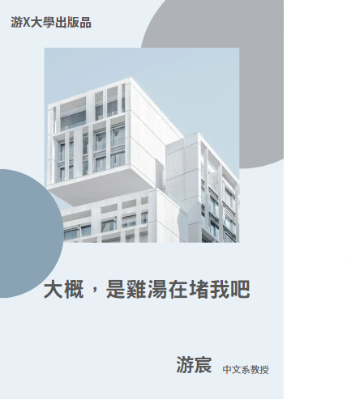

大概，是雞湯在堵我吧
作者：游宸
出版社：游X大學出版社
出版時間：2013/01/12
語言：繁體中文
定價：999元
簡介
隨著雞湯文學當道，人們的對於世界的認知變得扁平化，對於生命的思考也逐漸流於表面——說著要追求自我靈魂的芳香馥郁，卻往往只是變得自我中心，眼中容不下異議。因應這樣的現象，許多有志之士都提出自己對於雞湯文學的批判，以集結成這本心得散文集。
● 太濃的雞湯，讓人噎得慌
「我們不否認雞湯存在的必要性，但太濃的雞湯卻不能讓人往前，只能在原地低聲哭泣。」
● 雞湯越有毒，人生越孤獨
「越是濃厚的雞湯，毒性愈強，它讓人變得離群索居，只看見自己想看見的，最後變得越來越孤獨。」
● 釀月光為雨，灑落心間，成就青春好時光
「其實我們可以有不同的生活方式。對於雞湯的抗斥不是建立在對生活的理性，我們偶爾也可以浪漫，滅燭憐光滿。但這並非人生的全貌。」